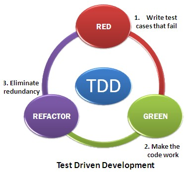

Тестирование
Тестирование - Зачем
- текущий функционал соответствует заявленному
- ранее обнаружение проблем
- сокращение временных затрат
- как документация
Тестирование - Недостатки
- надо писать
- надо уметь писать
- надо поддерживать
- нет гарантий
Тестирование - Режимы
- ручное
- автоматическое
Тестирование - Виды
- модульные
- интеграционные (взаимодействие модулей)
- приемочные (система в целом)
Тестирование - Типы
- функциональное
- конфигурационное
- нагрузочное
- производительности
- безопасности
- юзабилити
- ...
TDD
Test-driven development
TDD

TDD
TDD - Преимущества
- фокус на функционале
- предварительное обдумывание архитектуры
- стимулирует к меньшей связанности
- более безопасное написание нового кода
- легкий рефакторинг
TDD - Недостатки
- не все можно протестировать
- не все удобно тестировать
- временные затраты
Unit-tests
Модульные тесты
rectangle.js
class Rectangle {
constructor(x1, y1, x2, y2) {
this.x1 = x1;
this.x2 = x2;
this.y1 = y1;
this.y2 = y2;
}
width() { return Math.abs(this.x1 - this.x2); }
height() { return Math.abs(this.y1 - this.y2); }
isSquare() {return this.width() === this.height(); }
}
module.exports = Rectangle;
Jest - Docs
npm install --save-dev jest
package.json
{
"name": "tests-example",
"version": "1.0.0",
"scripts": {
"test": "jest"
},
"devDependencies": {
"jest": "^18.1.0"
},
"jest": {
"verbose": true,
"testEnvironment": "node"
}
}
tests/rectangle.spec.js
describe("A suite", () => {
it("contains spec with an expectation", () => {
expect(true).toBe(true);
});
});
npm test


tests/rectangle.spec.js
const Rectangle = require('../rectangle');
describe('Тестовый набор для Rectangle', () => {
let x1, x2, y1, y2;
beforeEach(() => { ... });
describe('>> модуль', () => { ... });
describe('>> конструктор', () => { ... });
describe('>> методы width и height', () => { ... });
describe('>> метод isSquare', () => { ... });
});
tests/rectangle.spec.js
beforeEach(() => {
x1 = 0;
y1 = 0;
x2 = 3;
y2 = 2;
});
tests/rectangle.spec.js
describe('>> модуль', () => {
it('должен импортировать функцию', () => {
expect(typeof Rectangle).toBe('function');
});
});
tests/rectangle.spec.js
describe('>> конструктор', () => {
it('должен принимать числа', () => {
let rect = new Rectangle(x1, y1, x2, y2);
expect(rect.x1).toEqual(x1);
expect(rect.x2).toEqual(x2);
expect(rect.y1).toEqual(y1);
expect(rect.y2).toEqual(y2);
});
...
});
tests/rectangle.spec.js
describe('>> конструктор', () => {
...
it('должен приводить параметры к числовому типу', () => {
x1 = x1.toString();
y1 = y1.toString();
x2 = x2.toString();
y2 = y2.toString();
let rect = new Rectangle(x1, y1, x2, y2);
expect(rect.x1).toEqual(parseInt(x1));
expect(rect.x2).toEqual(parseInt(x2));
expect(rect.y1).toEqual(parseInt(y1));
expect(rect.y2).toEqual(parseInt(y2));
});
...
});
tests/rectangle.spec.js
describe('>> конструктор', () => {
...
it('должен бросать исключение,
если точки одинаковые', () => {
expect(() => {
new Rectangle(x1, y1, x1, y1);
}).toThrowError(/Точки совпадают/);
});
...
});
tests/rectangle.spec.js
describe('>> конструктор', () => {
...
it('должен бросать исключение, если любой из
параметров не может быть
приведен к числу', () => {
expect(() => {
new Rectangle('asd', y1, x2, y2);
}).toThrowError(/Разрешены только числа/);
});
...
});
tests/rectangle.spec.js
describe('>> методы width и height', () => {
it('должны вычислять соответствующие величины', () => {
let rect = new Rectangle(x1, y1, x2, y2);
let width = Math.abs(x1 - x2),
height = Math.abs(y1 - y2);
expect(rect.width()).toEqual(width);
expect(rect.height()).toEqual(height);
});
});
tests/rectangle.spec.js
describe('>> методы width и height', () => {
it('должны вычислять соответствующие величины вне зависимости от порядка точек', () => {
let rect1 = new Rectangle(x1, y1, x2, y2),
rect2 = new Rectangle(x2, y2, x1, y1);
let width = Math.abs(x1 - x2),
height = Math.abs(y1 - y2);
expect(rect1.width()).toEqual(width);
expect(rect2.width()).toEqual(width);
expect(rect1.height()).toEqual(height);
expect(rect2.height()).toEqual(height);
});
});
tests/rectangle.spec.js
describe('>> метод isSquare', () => {
it('должен возвращять true, если стороны равны', () => {
y2 = 3;
let rect = new Rectangle(x1, y1, x2, y2);
expect(rect.isSquare()).toBe(true);
});
});
tests/rectangle.spec.js
describe('>> метод isSquare', () => {
it('должен возвращять false, если стороны неравны', () => {
let rect = new Rectangle(x1, y1, x2, y2);
expect(rect.isSquare()).toBe(false);
});
});
rectangle.js
// должен приводить параметры к числовому типу
constructor(x1, y1, x2, y2) {
this.x1 = parseFloat(x1);
this.x2 = parseFloat(x2);
this.y1 = parseFloat(y1);
this.y2 = parseFloat(y2);
}
rectangle.js
// должен бросать исключение, если любой
// из параметров не может быть приведен к числу
constructor(x1, y1, x2, y2) {
...
if (isNaN(this.x1)
|| isNaN(this.x2)
|| isNaN(this.y1)
|| isNaN(this.y2)) {
throw new Error('[Rectangle]: Разрешены только числа');
}
...
}
rectangle.js
// должен бросать исключение, если любой
// из параметров не может быть приведен к числу
constructor(x1, y1, x2, y2) {
...
if (this.x1 === this.x2 && this.y1 === this.y2) {
throw new Error('[Rectangle]: Точки совпадают');
}
}


Jest
Jest - Globals
afterAll(fn)
beforeAll(fn)
afterEach(fn)
beforeEach(fn)
describe(name, fn)
.skip
.only
require.requireActual(moduleName)
require.requireMock(moduleName)
test(name, fn)
it(name, fn)
.skip
.only
Jest - Globals
describe.only('my beverage', () => {
test('is delicious', () => {
expect(myBeverage.delicious).toBeTruthy();
});
});
describe('my other beverage', () => {
// ... will be skipped
});
Jest - Globals
describe('my beverage', () => {
test('is delicious', () => {
expect(myBeverage.delicious).toBeTruthy();
});
});
describe.skip('my other beverage', () => {
// ... will be skipped
});
Jest - Expect
// expect(value)
test('the best flavor is grapefruit', () => {
expect(bestLaCroixFlavor()).toBe('grapefruit');
});
Jest - Expect
// expect.anything()
test('not null or undefined', () => {
let beverage = barmen.getSome();
expect(beverage).toEqual(expect.anything());
})
Jest - Expect
// expect.any(constructor)
test('any of type', () => {
let randomNumber = Magic.getNumber();
expect(randomNumber)
.toEqual(expect.any(Number));
})
Jest - Expect
// expect.arrayContaining(array)
const expected = [1, 2, 3, 4, 5, 6];
it('matches even with an unexpected number 7', () => {
expect([4, 1, 6, 7, 3, 5, 2, 5, 4, 6])
.toEqual(expect.arrayContaining(expected));
});
Jest - Expect
// expect.assertions(number)
test('prepareState prepares a valid state', () => {
expect.assertions(1);
prepareState((state) => {
expect(validateState(state)).toBeTruthy();
})
return waitOnState();
})
Jest - Expect
// expect.objectContaining(object)
test('onPress gets called with the right thing', () => {
let onPress = jest.fn();
simulatePresses(onPress);
expect(onPress)
.toBeCalledWith(expect.objectContaining({
x: expect.any(Number),
y: expect.any(Number),
}));
})
Jest - Expect
// .not
test('the best flavor is not coconut', () => {
expect(bestLaCroixFlavor())
.not.toBe('coconut');
});
Jest - Expect
// .toBe(value)
const can = {
ounces: 12,
name: 'pamplemousse',
};
describe('the can', () => {
test('has 12 ounces', () => {
expect(can.ounces).toBe(12);
});
test('has a sophisticated name', () => {
expect(can.name).toBe('pamplemousse');
});
});
Jest - Expect
// .toHaveBeenCalled()
describe('drinkAll', () => {
test('drinks something lemon-flavored', () => {
let drink = jest.fn();
drinkAll(drink, 'lemon');
expect(drink).toHaveBeenCalled();
});
test('does not drink something octopus-flavored', () => {
let drink = jest.fn();
drinkAll(drink, 'octopus');
expect(drink).not.toHaveBeenCalled();
});
});
Jest - Expect
// .toHaveBeenCalledTimes(number)
test('drinkEach drinks each drink', () => {
let drink = jest.fn();
drinkEach(drink, ['lemon', 'octopus']);
expect(drink).toHaveBeenCalledTimes(2);
});
Jest - Expect
// .toHaveBeenCalledWith(arg1, arg2, ...)
test(`registration applies correctly
to orange La Croix`, () => {
let beverage = new LaCroix('orange');
register(beverage);
let f = jest.fn();
applyToAll(f);
expect(f).toHaveBeenCalledWith(beverage);
});
Jest - Expect
// .toHaveBeenLastCalledWith(arg1, arg2, ...)
test(`applying to all flavors
does mango last`, () => {
let drink = jest.fn();
applyToAllFlavors(drink);
expect(drink)
.toHaveBeenLastCalledWith('mango');
});
Jest - Expect
// .toBeCloseTo(number, numDigits)
test('adding works sanely with simple decimals', () => {
expect(0.2 + 0.1).toBe(0.3); // Fails!
});
test('adding works sanely with simple decimals', () => {
expect(0.2 + 0.1).toBeCloseTo(0.3, 5);
});
Jest - Expect
// .toBeDefined()
test('there is a new flavor idea', () => {
expect(fetchNewFlavorIdea()).toBeDefined();
});
Jest - Expect
// .toBeGreaterThan(number)
// .toBeGreaterThanOrEqual(number)
// .toBeLessThan(number)
// .toBeLessThanOrEqual(number)
test('ounces per can is more than 10', () => {
expect(ouncesPerCan()).toBeGreaterThan(10);
});
Jest - Expect
// .toBeInstanceOf(Class)
class A {}
expect(new A()).toBeInstanceOf(A);
expect(() => {}).toBeInstanceOf(Function);
expect(new A()).toBeInstanceOf(Function); // throws
Jest - Expect
// .toContain(item)
test('the flavor list contains lime', () => {
expect(getAllFlavors()).toContain('lime');
});
Jest - Expect
// .toContainEqual(item)
describe('my beverage', () => {
test('is delicious and not sour', () => {
const myBeverage = {delicious: true, sour: false};
expect(myBeverages()).toContainEqual(myBeverage);
});
});
Jest - Expect
// .toEqual(value)
const can1 = {
flavor: 'grapefruit',
ounces: 12,
};
const can2 = {
flavor: 'grapefruit',
ounces: 12,
};
describe('the La Croix cans on my desk', () => {
test('have all the same properties', () => {
expect(can1).toEqual(can2);
});
});
Jest - Expect
// .toThrow(error)
test('throws on octopus', () => {
expect(() => {
drinkFlavor('octopus');
}).toThrow();
});
function drinkFlavor(flavor) {
if (flavor == 'octopus') {
throw new DisgustingFlavorError(
'yuck, octopus flavor'
);
}
}
Jest - Expect
expect.stringContaining(string)
expect.stringMatching(regexp)
.toBeFalsy()
.toBeNull()
.toBeTruthy()
.toBeUndefined()
.toHaveLength(number)
.toMatch(regexpOrString)
.toMatchObject(object)
Jest - Expect
expect.extend({
toBeDivisibleBy(received, argument) {
const pass = (received % argument == 0);
if (pass) {
return {
pass: true,
message: () => `expected ${received} not to be divisible by ${argument}`,
}
} else {
return {
pass: false,
message: () => `expected ${received} to be divisible by ${argument}`,
}
}
}
});
Jest - Expect
test('even and odd numbers', () => {
expect(100).toBeDivisibleBy(2);
expect(101).not.toBeDivisibleBy(2);
});
Jest - Mock Functions
// mockFn.mock.calls
const mockFn = jest.fn();
mockFn('arg1', 'arg2');
mockFn('arg3', 'arg4');
console.log(mockFn.mock.calls);
>
[
['arg1', 'arg2'],
['arg3', 'arg4']
]
Jest - Mock Functions
// mockFn.mock.instances
var mockFn = jest.fn();
var a = new mockFn();
var b = new mockFn();
mockFn.mock.instances[0] === a; // true
mockFn.mock.instances[1] === b; // true
Jest - Mock Functions
// mockFn.mockClear()
Сбрасывает
mockFn.mock.calls
и mockFn.mock.instances
Jest - Mock Functions
// mockFn.mockReset()
Возвращает mockFn
к исходному состоянию
Jest - Mock Functions
// mockFn.mockImplementation(fn)
const mockFn = jest.fn()
.mockImplementation(scalar => 42 + scalar);
// or: jest.fn(scalar => 42 + scalar);
const a = mockFn(0);
const b = mockFn(1);
a === 42; // true
b === 43; // true
Jest - Mock Functions
// mockFn.mockImplementationOnce(fn)
var myMockFn = jest.fn(() => 'default')
.mockImplementationOnce(() => 'first call')
.mockImplementationOnce(() => 'second call');
console.log(myMockFn(), myMockFn(), myMockFn(), myMockFn());
> 'first call', 'second call', 'default', 'default'
Jest - Timers
// timerGame.js
'use strict';
function timerGame(callback) {
console.log('Ready....go!');
setTimeout(() => {
console.log('Times up -- stop!');
callback && callback();
}, 1000);
}
module.exports = timerGame;
Jest - Timers
// __tests__/timerGame-test.js
jest.useFakeTimers();
test('waits 1 second before ending the game', () => {
const timerGame = require('../timerGame');
timerGame();
expect(setTimeout.mock.calls.length).toBe(1);
expect(setTimeout.mock.calls[0][1]).toBe(1000);
});
Jest - Timers
// __tests__/timerGame-test.js
jest.useFakeTimers();
test('calls the callback after 1 second', () => {
const timerGame = require('../timerGame');
const callback = jest.fn();
timerGame(callback);
expect(callback).not.toBeCalled();
jest.runAllTimers();
expect(callback).toBeCalled();
expect(callback.mock.calls.length).toBe(1);
});
Jest - Timers
// infiniteTimerGame.js
function infiniteTimerGame(callback) {
console.log('Ready....go!');
setTimeout(() => {
console.log('Times up! Wait 10 seconds.');
callback && callback();
setTimeout(() => {
infiniteTimerGame(callback);
}, 10000);
}, 1000);
}
module.exports = infiniteTimerGame;
Jest - Timers
// __tests__/infiniteTimerGame-test.js
jest.useFakeTimers();
describe('infiniteTimerGame', () => {
test('schedules a 10-second timer after 1 second', () => {
const infiniteTimerGame = require('../infiniteTimerGame');
const callback = jest.fn();
infiniteTimerGame(callback);
expect(setTimeout.mock.calls.length).toBe(1);
expect(setTimeout.mock.calls[0][1]).toBe(1000);
...
});
});
Jest - Timers
// __tests__/infiniteTimerGame-test.js
jest.useFakeTimers();
describe('infiniteTimerGame', () => {
test('schedules a 10-second timer after 1 second', () => {
...
jest.runOnlyPendingTimers();
expect(callback).toBeCalled();
expect(setTimeout.mock.calls.length).toBe(2);
expect(setTimeout.mock.calls[1][1]).toBe(10000);
});
});
Jest - Timers
// __tests__/infiniteTimerGame-test.js
jest.useFakeTimers();
it('call callback 3 times', () => {
const timerGame = require('../infiniteTimerGame');
const callback = jest.fn();
timerGame(callback);
expect(callback).not.toBeCalled();
jest.runTimersToTime(23000);
expect(callback).toHaveBeenCalledTimes(3);
});
Jest - Async
npm install --save-dev babel-jest
npm install --save-dev babel-preset-es2017
Jest - Async
// .babelrc
{
"presets": ["es2017"]
}
Jest - Async
// user.js
export function getUserName(userID) {
return new Promise(() => {
...
});
}
Jest - Async
// __tests__/user-test.js
it('works with async/await', async () => {
const userName = await user.getUserName(4);
expect(userName).toEqual('Mark');
});
Jest - Async
// __tests__/user-test.js
it('tests error with async/await', async () => {
expect.assertions(1);
try {
await user.getUserName(2);
} catch (object) {
expect(object.error)
.toEqual('User with 2 not found.');
}
});
Jest - Manual Mocks
// FileSummarizer.js
const fs = require('fs');
exports.summarizeFilesInDirectorySync
= function(directory) {
return fs
.readdirSync(directory)
.map(fileName => ({
fileName,
directory,
}));
};
Jest - Manual Mocks
// __mocks__/fs.js
const path = require('path');
const fs = jest.genMockFromModule('fs');
let mockFiles = Object.create(null);
function __setMockFiles(newMockFiles) {
mockFiles = Object.create(null);
for (const file in newMockFiles) {
const dir = path.dirname(file);
if (!mockFiles[dir]) {
mockFiles[dir] = [];
}
mockFiles[dir].push(path.basename(file));
}
}
...
Jest - Manual Mocks
// __mocks__/fs.js
...
function readdirSync(directoryPath) {
return mockFiles[directoryPath] || [];
}
fs.__setMockFiles = __setMockFiles;
fs.readdirSync = readdirSync;
module.exports = fs;
Jest - Manual Mocks
// __tests__/FileSummarizer-test.js
jest.mock('fs');
describe('listFilesInDirectorySync', () => {
const MOCK_FILE_INFO = {
'/path/to/file1.js': 'console.log("file1 contents");',
'/path/to/file2.txt': 'file2 contents',
};
beforeEach(() => {
require('fs').__setMockFiles(MOCK_FILE_INFO);
});
...
});
Jest - Manual Mocks
// __tests__/FileSummarizer-test.js
jest.mock('fs');
describe('listFilesInDirectorySync', () => {
...
test('includes all files in the directory in the summary', () => {
const FileSummarizer = require('../FileSummarizer');
const fileSummary
= FileSummarizer
.summarizeFilesInDirectorySync('/path/to');
expect(fileSummary.length).toBe(2);
});
});
Тестируем Express
Модулями
baseService.js
module.exports = BaseService;
function BaseService(repository, errors) {
const defaults = {
readChunk: {
limit: 10,
page: 1,
order: 'asc',
orderField: 'id'
}
};
...
}
baseService.js
module.exports = BaseService;
function BaseService(repository, errors) {
...
let self = this;
this.readChunk = readChunk;
this.read = read;
this.baseCreate = baseCreate;
this.baseUpdate = baseUpdate;
this.delete = del;
...
}
baseService.js
async function readChunk(options) {
options = Object.assign({},
defaults.readChunk, options);
let limit = options.limit;
let offset = (options.page - 1) * limit;
...
}
baseService.js
async function readChunk(options) {
...
return repository
.findAll({
limit: limit,
offset: offset,
order: [[
options.orderField,
options.order.toUpperCase()
]],
raw: true
});
}
baseService.js
async function read(id) {
id = parseInt(id);
if (isNaN(id)) {
reject(errors.invalidId);
return;
}
...
}
baseService.js
async function read(id) {
...
const entity = await repository.findById(id,
{ raw: true });
if (!entity) throw errors.notFound;
return entity;
}
baseService.js
async function baseCreate(data) {
return repository.create(data);
}
baseService.js
async function baseUpdate(id, data) {
const [,[entity]] = await
repository.update(data, {
where: { id: id },
limit: 1
});
return entity;
}
baseService.js
async function del(id) {
await repository.destroy({ where: { id: id } });
return { success: true };
}
tests/services.base.spec.js
const data = {
42: {
id: 42,
name: 'Batman'
}
};
const repository
= require('./mocks/repository')(data);
const errors = require('../errors');
const Service = require('../baseService');
const service = new Service(repository, errors);
...
errors.js
module.exports = {
invalidId: {
message: 'Invalid id',
code: 'invalid_id',
status: 400
},
notFound: {
message: 'Entity not found',
code: 'entity_not_found',
status: 404
}
};
tests/mocks/repository.js
module.exports = (data) => {
const mock = {
findAll: jest.fn((params)
=> Promise.resolve(data)),
findById: jest.fn((id)
=> Promise.resolve(data[id])),
create: jest.fn((data)
=> Promise.resolve(data)),
update: jest.fn((data)
=> Promise.resolve([1, [data]])),
destroy: jest.fn(()
=> Promise.resolve(1))
};
...
};
tests/mocks/repository.js
module.exports = (data) => {
...
mock.mockClear = () => {
mock.findAll.mockClear();
mock.findById.mockClear();
mock.create.mockClear();
mock.update.mockClear();
mock.destroy.mockClear();
};
return mock;
};
tests/services.base.spec.js
...
describe('Тестовый набор для Service.Base', () => {
beforeEach(() => repository.mockClear());
describe('>> модуль', () => { ... });
describe('>> постраничное чтение', () => { ... });
describe('>> чтение', () => { ... });
describe('>> создание', () => { ... });
describe('>> обновление', () => { ... });
describe('>> удаление', () => { ... });
});
tests/services.base.spec.js
// >> модуль
it('должен импортировать функцию', () => {
expect(typeof Service).toBe('function');
});
it('должен создавать объект', () => {
expect(typeof service).toBe('object');
});
tests/services.base.spec.js
// >> постраничное чтение
it('должно возвращать promise', () => {
expect(service.readChunk())
.toBeInstanceOf(Promise);
});
tests/services.base.spec.js
// >> постраничное чтение
it('должно возвращать массив записей', async () => {
let records = await service.readChunk();
expect(records).toEqual(data);
});
tests/services.base.spec.js
// >> постраничное чтение
it('должно использовать дефолтные значения', async () => {
await service.readChunk();
await service.readChunk({ limit: 100 });
await service.readChunk({ page: 3 });
await service.readChunk({ orderField: 'name' });
await service.readChunk({ order: 'desc' });
expect(repository.findAll)
.toHaveBeenCalledTimes(5);
expect(repository.findAll.mock.calls[0][0])
.toMatchObject({ limit: 10, offset: 0,
order: [['id','ASC']]
});
...
});
tests/services.base.spec.js
// >> постраничное чтение
it('должно использовать дефолтные значения', async () => {
...
expect(repository.findAll.mock.calls[2][0])
.toMatchObject({ offset: 20 });
expect(repository.findAll.mock.calls[3][0])
.toMatchObject({ order: [['name','ASC']] });
expect(repository.findAll.mock.calls[4][0])
.toMatchObject({ order: [['id','DESC']] });
});
tests/services.base.spec.js
// >> постраничное чтение
it('должно расcчитывать смещение', async () => {
await service.readChunk({ limit: 10, page: 1 });
await service.readChunk({ limit: 5, page: 2 });
expect(repository.findAll)
.toHaveBeenCalledTimes(2);
expect(repository.findAll.mock
.calls[0][0].offset).toBe(0);
expect(repository.findAll.mock
.calls[1][0].offset).toBe(5);
});
tests/services.base.spec.js
// >> чтение
it('должно возвращать promise', () => {
expect(service.read())
.toBeInstanceOf(Promise);
});
tests/services.base.spec.js
// >> чтение
it('должно возвращать запись по id', async () => {
let record = await service.read(42);
expect(repository.findById)
.toHaveBeenCalled();
expect(record).toEqual(data[42]);
});
tests/services.base.spec.js
// >> чтение
it(`должно возвращать ошибку,
если запись не найдена`, async () => {
expect.assertions(2);
try {
await await service.read(9000);
} catch (error) {
expect(repository.findById)
.toHaveBeenCalled();
expect(error).toEqual(errors.notFound);
}
});
tests/services.base.spec.js
// >> чтение
it(`должно возвращать ошибку,
если id не целое число`, async () => {
expect.assertions(2);
try {
await await service.read('surprise!');
} catch (error) {
expect(repository.findById)
.not.toHaveBeenCalled();
expect(error).toEqual(errors.invalidId);
}
});
tests/services.base.spec.js
// >> создание
it('должно возвращать promise', () => {
expect(service.baseCreate())
.toBeInstanceOf(Promise);
});
tests/services.base.spec.js
// >> создание
it('должно создавать объект', async () => {
let record =
await service.baseCreate(data[42]);
expect(repository.create)
.toHaveBeenCalled();
expect(repository.create.mock.calls[0][0])
.toEqual(data[42]);
expect(record).toEqual(data[42]);
});
tests/services.base.spec.js
// >> обновление
it('должно возвращать promise', () => {
expect(service.baseUpdate())
.toBeInstanceOf(Promise);
});
tests/services.base.spec.js
// >> обновление
it('должно обновлять объект', async () => {
let record =
await service.baseUpdate(42, data[42]);
expect(repository.update)
.toHaveBeenCalled();
expect(repository.update.mock.calls[0][0])
.toEqual(data[42]);
expect(repository.update.mock.calls[0][1])
.toEqual({ where: { id: 42 }, limit: 1 });
expect(record).toEqual(data[42]);
});
tests/services.base.spec.js
// >> удаление
it('должно возвращать promise', () => {
expect(service.delete())
.toBeInstanceOf(Promise);
});
tests/services.base.spec.js
// >> удаление
it('должно удалять объект', async () => {
let result = await service.delete(42);
expect(repository.destroy)
.toHaveBeenCalled();
expect(repository.update.mock.calls[0][0])
.toEqual({ where: { id: 42 }});
expect(result).toEqual({ success: true });
});
Тестируем Express
Целиком
npm install supertest --save-dev
app.js
const express = require('express');
const bodyParser = require('body-parser');
const heroes = [
{ id: Date.now() + 1, name: 'Rick Grimes' },
{ id: Date.now() + 2, name: 'Carl Grimes' },
{ id: Date.now() + 3, name: 'Daryl Dixon' }
];
const app = express();
app.use(bodyParser.json());
...
app.js
...
app.get('/heroes', (req, res) => {
res.json({ heroes });
});
app.get('/heroes/:id', (req, res) => {
let id = parseInt(req.params.id);
let hero = heroes.find(x => x.id === id);
res.json(hero);
});
...
app.js
...
app.post('/heroes', (req, res) => {
let hero = req.body;
hero.id = Date.now() + heroes.length;
heroes.push(hero);
res.status(201).json(hero);
});
...
app.js
...
app.put('/heroes/:id', (req, res) => {
let id = parseInt(req.params.id);
let index = heroes.findIndex(x => x.id === id);
let hero = req.body;
hero.id = id;
Object.assign(heroes[index], hero);
res.json(heroes[index]);
});
...
app.js
...
app.delete('/heroes/:id', (req, res) => {
let id = parseInt(req.params.id);
let index = heroes.findIndex(x => x.id === id);
let hero = heroes[index];
heroes.splice(index, 1);
res.json(hero);
});
module.exports = app;
tests/app.spec.js
const app = require('../app');
const request = require('supertest')(app);
function getHeroes() {
return request
.get('/heroes')
.expect(200)
.then((res) => res.body.heroes);
}
...
tests/app.spec.js
function getHero(id) {
return request
.get(`/heroes/${id}`)
.expect(200)
.then((res) => res.body);
}
tests/app.spec.js
function createHero(hero) {
return request
.post('/heroes')
.send(hero)
.expect(201)
.then((res) => res.body);
}
tests/app.spec.js
function updateHero(hero) {
return request
.put(`/heroes/${hero.id}`)
.send(hero)
.expect(200)
.then((res) => res.body)
}
tests/app.spec.js
function deleteHero(hero) {
return request
.delete(`/heroes/${hero.id}`)
.expect(200)
.then((res) => res.body)
}
tests/app.spec.js
it('возвращает список героев', async () => {
expect.assertions(1);
const heroes = await getHeroes();
expect(heroes).toContainEqual(
expect.objectContaining({
name: 'Rick Grimes'
})
);
});
tests/app.spec.js
it('возвращает героя', async () => {
expect.assertions(1);
const heroes = await getHeroes();
let daryl = heroes
.find((hero) => hero.name === 'Daryl Dixon');
const hero = await getHero(daryl.id);
expect(hero).toEqual(daryl);
});
tests/app.spec.js
it('добавляет героя', async () => {
expect.assertions(2);
const glenn = { name: 'Glenn Rhee' };
const hero = await createHero(glenn);
const heroes = await getHeroes();
expect(hero).toMatchObject(glenn);
expect(heroes).toContainEqual(
expect.objectContaining(glenn)
);
});
tests/app.spec.js
it('обновляет героя', async () => {
expect.assertions(1);
let heroes = await getHeroes();
let rick = heroes
.find((hero) => hero.name === 'Rick Grimes');
rick.status = 'Alive';
await updateHero(rick);
heroes = await getHeroes();
expect(heroes).toContainEqual(
expect.objectContaining(rick)
);
});
tests/app.spec.js
it('удаляет героя', async () => {
expect.assertions(1);
let heroes = await getHeroes();
let carl = heroes
.find((hero) => hero.name === 'Carl Grimes');
await deleteHero(carl);
heroes = await getHeroes();
expect(heroes).not.toContainEqual(
expect.objectContaining(carl)
);
});
Travis CI
.travis.yml
language: node_js
notifications:
email:
on_success: never
on_failure: change
node_js:
- "node"
- "6"
before_script:
- npm install


TDD + Gulp
npm install --save-dev gulp
npm install --save-dev gulp-jest
npm install --save-dev jest-cli
gulpfile.js
const gulp = require('gulp');
const jest = require('gulp-jest').default;
gulp.task('tdd', ['jest'], () => {
gulp.watch('**/*.js', ['jest']);
});
gulp.task('jest', () => {
return gulp.src('__tests__')
.pipe(jest());
});
package.json
{
"scripts": {
"test": "gulp tdd"
}
}
npm test
Siege
Нагрузочное тестирование
npm install --save-dev siege
// benchmark.js
const siege = require('siege');
siege(__dirname + '/app.js')
.on(3000)
.for(10000).times
.get('/heroes')
.attack();
node benchmark.js